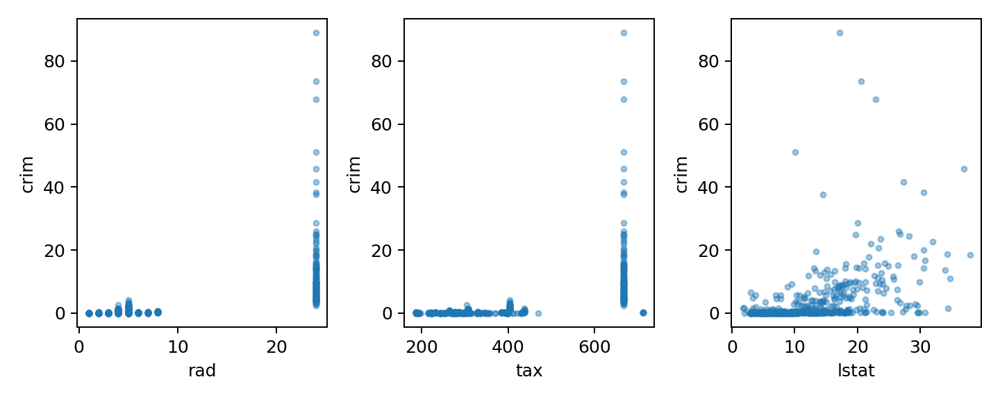

代码 2.4-40 · 第10(d)：用散点图核对犯罪率关联
按Notebook顺序运行。后续代码依赖前面定义的变量。真实数据来自教材官网。
逐步读代码
subplots(1,3)返回一维图区数组；zip把三个图区分别配给rad、tax、lstat，每轮从同一张Boston表取横纵坐标。s=9和alpha=0.4用于辨认重叠点，ax.set设置当前图的轴名。三个散点图都以crim为纵轴。- 在循环之外调整整个三图布局，保存两种格式后显示并关闭，避免每轮重复保存未完成的整图。

下载已执行Notebook · 返回项目目录